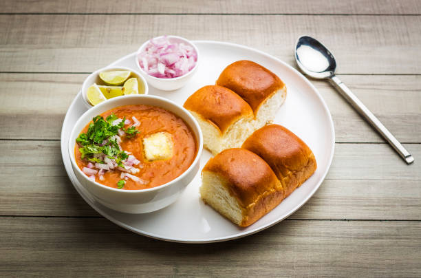

| Prep time |
Cooking time |
Total time |
| 20 mins |
30 mins |
50 mins |
Ingredients:
- ½ cup vegetable oil.
- 2 teaspoons chopped garlic.
- 1 teaspoon finely chopped green chile peppers.
- 1 cup chopped onions.
- 2 teaspoons grated fresh ginger.
- 1 cup chopped roma (plum) tomatoes.
- 2 cups cauliflower, finely chopped.
- 1 cup chopped cabbage.
- 1 cup green peas.
- 1 cup grated carrots.
- 4 potatoes, boiled and mashed.
- 3 tablespoons pav bhaji masala.
- Salt to taste.
- 1 tablespoon lemon juice.
- 8 (2 inch square) dinner rolls.
- ½ tablespoon butter.
- ¼ cup finely chopped onion.
- 1 tablespoon finely chopped green chile peppers.
- ¼ cup chopped fresh cilantro.
Directions:
- Heat the oil in a wok over medium heat. Saute garlic and green chile for 30 seconds, then stir in onions and ginger. Cook until onions are brown. Add tomatoes, and cook until pasty. Stir in cauliflower, cabbage, peas, carrots and potatoes. Season with pav bhaji masala. Cover, and cook for 15 minutes, stirring occasionally. Season with salt, and stir in lemon juice.
- Toast the dinner rolls, and spread lightly with butter. Serve garnished with chopped onion, green chile and cilantro.
Nutrition facts:
| Calories |
Fat |
Carbs |
Protein |
| 652 |
34g |
79g |
13g |
Return to the top
Return to home